Patrimony of Gestures /
Patrimonio de gestos

'Patrimony of gestures' is a term deriving from the field of archeobotany. It means the archeological study of past 'reproductive' practices via the reading of plant evidence found at archaeological sites, preserved over centuries through waterlogging, carbonisation or imprinting in ceramics. From these 'inscriptions', archeobotanists reconstruct the gestures of past peoples as they worked with and lived on the land.
But what patrimony of gestures will current reproductive practices leave imprinted? And what occurs when the memory of reproductive practices is not protected, or actively erased?
But what patrimony of gestures will current reproductive practices leave imprinted? And what occurs when the memory of reproductive practices is not protected, or actively erased?

Patrimony of Gestures (2018-2022) was a series of exercises in writing, ceramics, performance-reading and listening that consider the memory of ‘reproductive work’ beyond its definition as domestic labour, foregrounding myriad forms of communication and political practice, including poetry and art. The project was developed in the context of the Hangar.org Artistic Research Residency at Casa Velaquez in 2018, during which time I collaborated with an archeobotanist.
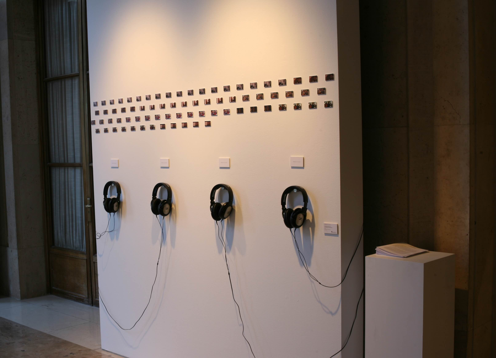
The Logic of Assistance was developed as an audio installation. The audios recount the details relating to the institutional, legislative and commercial forces that in the 1990s and early 2000s gave rise to the fertility clinic of today. I was interested in researching assisted reproductive technologies (ARTs) at Casa Velazquez, because it is a French cultural institution located in Spain: an opportunity to think about the different politics of access to ARTs, and more broadly family, in Europe. While in Spain LGBTQIA+ access to ARTs is funded on the public health system, in France at the time of the exhibition in 2019, it was banned. In the audio though I mention neither ‘fertility’ nor ‘biological reproduction’, speaking only of ‘the assisted reproduction of the voice’. The quality, rhythm, volume and tone of my voice shifts as I address four different audiences: the public, a class of students, a parent and a lover.
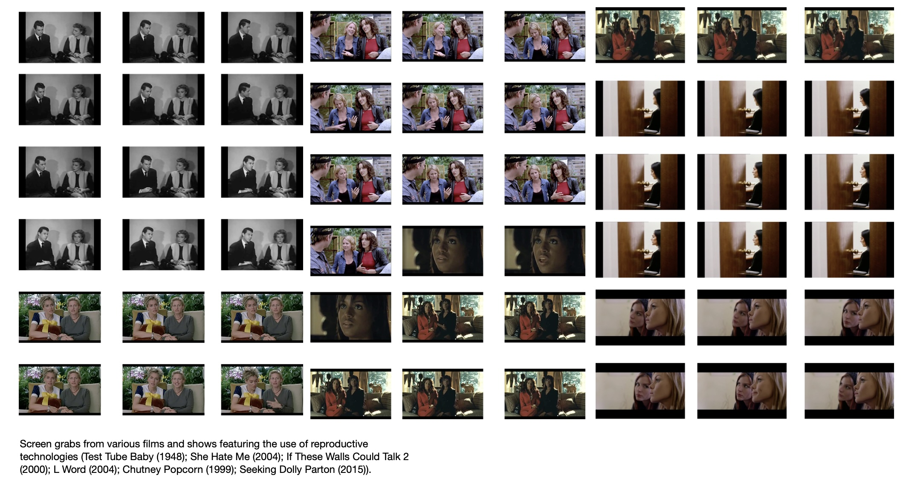
Below the audio were scaled down screen grabs from television and films in which LGBTQIA++ characters engage with ARTs and fertility clinics. These audiovisual narratives of 'queer reproduction' tended to unfold predominantly through the gesture of waiting: characters repeatedly pictured waiting in clinic waiting rooms, waiting in kitchens, waiting at parties, waiting in living rooms etc. I thought of Faith Wilding’s 1974 poem and performance Waiting, in which the speaker’s life is re-cast as a litany of waiting scenes.

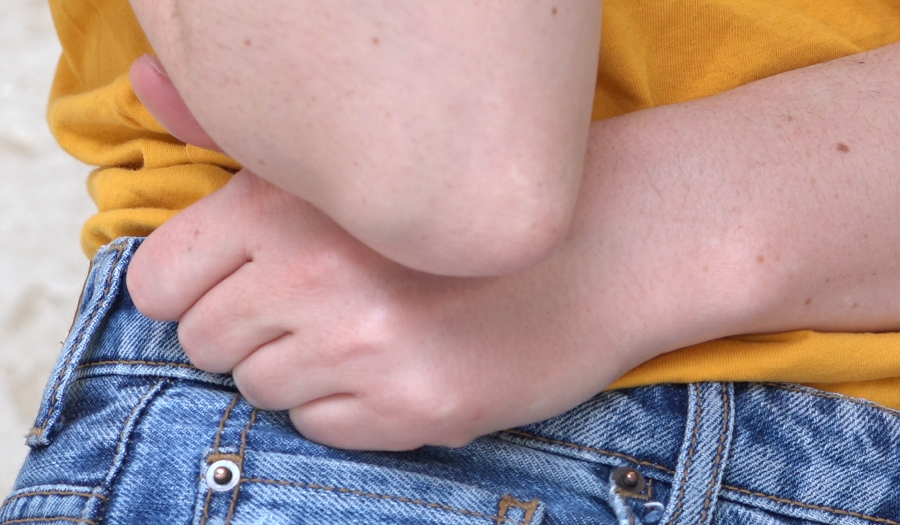
During the 2018 residency I created a lot of images and videos copying these waiting gestures, a way to consider the question: is waiting, which Wilding analysed in 1974 as a form of feminised labour, now, under biocapital, queer work too?
Kaushik Sunder Rajan (2006) suggests the biosciences are unique in the history of capitalist markets because biotech firms are overwhelmingly engaged in promissory hype: marketing activities designed to fashion future investors, buyers and customers for their drugs and services. In the age of personalised medicine, the figure of what Rajan calls biocapital's ‘patient-in-waiting’ dominates.
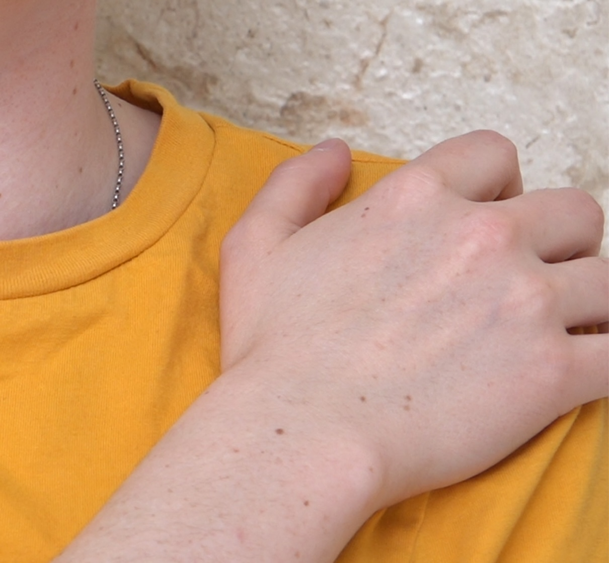
By excerpting the ‘waiting queer’ in the context of a French cultural institution, the installation invests the gesture of waiting with a spectral double meaning. On one hand, the waiting queer points to the fabrication of the patient-in-waiting under biocapital. On the other, excerpting these images in the French institution protested the pending status of LGBTQIA+ access to ARTs in France.
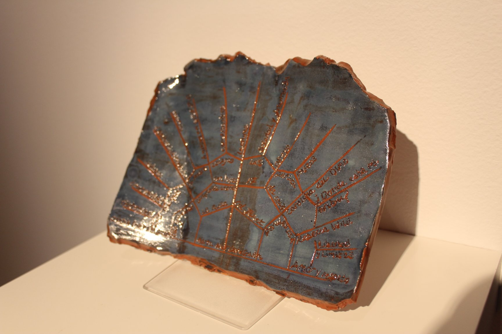
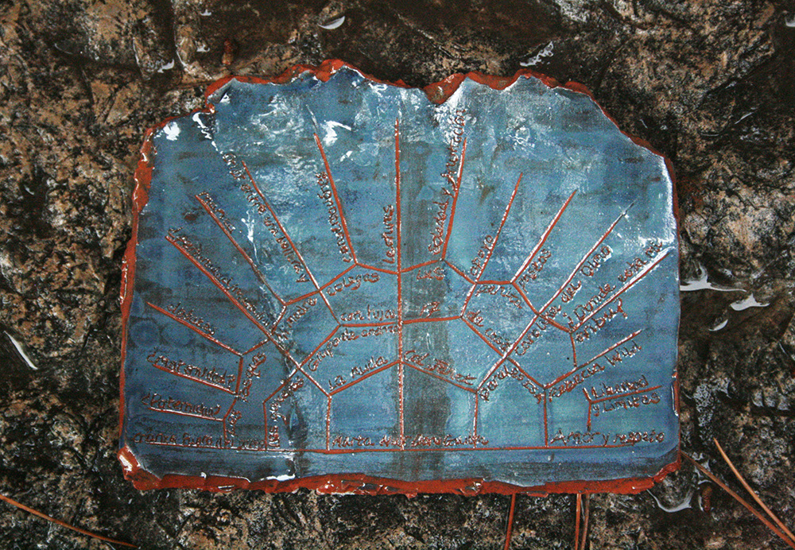
Opposite the audio work the Networks of Care=Critique ceramic piece was displayed. The (ongoing) ceramics project began with this archeobotanic idea of 'patrimony of gestures': an inscription of bodily reproductive practices on the surface of ceramics. I sat with a friend to discuss the forms of care –intellectual, emotional or physical– and critique –pedagogy, party or protest– that have been important over our lifespans. We then arranged the information on a genealogical-style diagram divided into decades or years and I made a ceramic plate of the diagram, which belonged to the person. I inscribed the clay using a needle and seeds from the Red de Semillas, a network of community seed banks active in Spain. The work reinscribes the live link between trans*feminist art, queer parenting and agroecological 'reproductive' practices, as myriad forms of resistance to state and neoliberal 'reproductive control'.

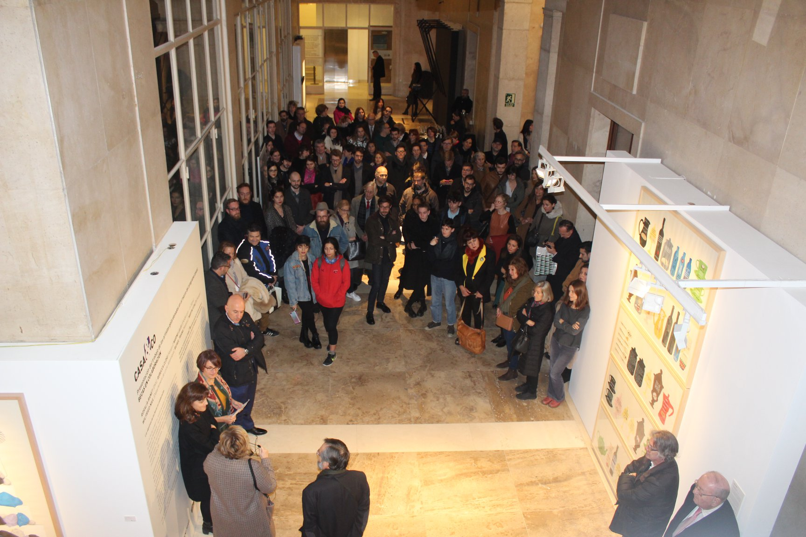
The rest of the readings and actions took place 2018-2019 and were documented by a series of poster-publications, each one using a different printing technique (typography, digital, offset and screen printing), produced in collaboration with collectives L'Automatica and Madam_tornado in Barcelona. The six posters were read in a performance-reading (with guests Tamara Al-Mashouk and Alba Juventy) at Hangar Center for Art and Technology, Barcelona, in December, 2019.
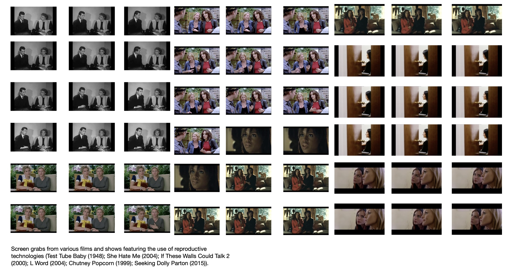
Below the audio were scaled down screen grabs from television and films in which LGBTQIA++ characters engage with ARTs and fertility clinics. These audiovisual narratives of 'queer reproduction' tended to unfold predominantly through the gesture of waiting: characters repeatedly pictured waiting in clinic waiting rooms, waiting in kitchens, waiting at parties, waiting in living rooms etc. I thought of Faith Wilding’s 1974 poem and performance Waiting, in which the speaker’s life is re-cast as a litany of waiting scenes.
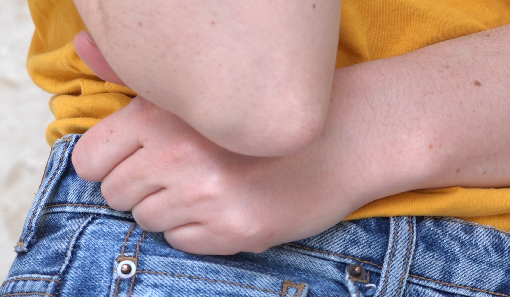
During the 2018 residency I created a lot of images and videos copying these waiting gestures, a way to consider the question: is waiting, which Wilding analysed in 1974 as a form of feminised labour, now, under biocapital, queer work too?
Kaushik Sunder Rajan (2006) suggests the biosciences are unique in the history of capitalist markets because biotech firms are overwhelmingly engaged in promissory hype: marketing activities designed to fashion future investors, buyers and customers for their drugs and services. In the age of personalised medicine, the figure of what Rajan calls biocapital's ‘patient-in-waiting’ dominates.
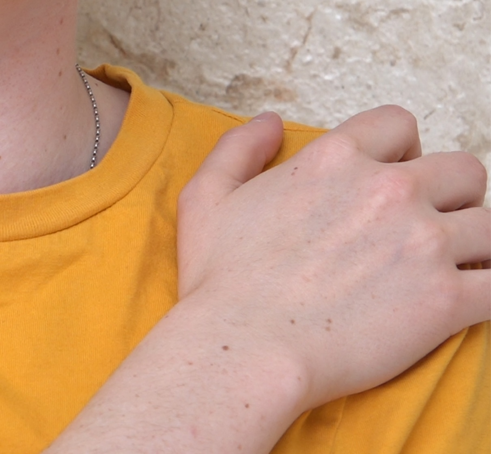
By excerpting the ‘waiting queer’ in the context of a French cultural institution, the installation invests the gesture of waiting with a spectral double meaning. On one hand, the waiting queer points to the fabrication of the patient-in-waiting under biocapital. On the other, excerpting these images in the French institution protested the pending status of LGBTQIA+ access to ARTs in France.
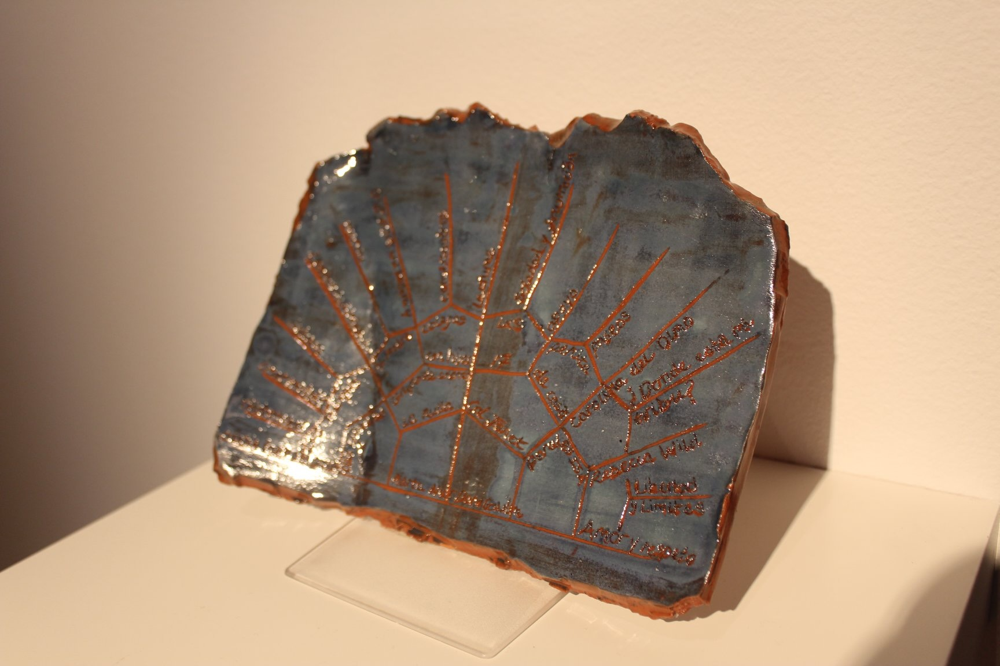
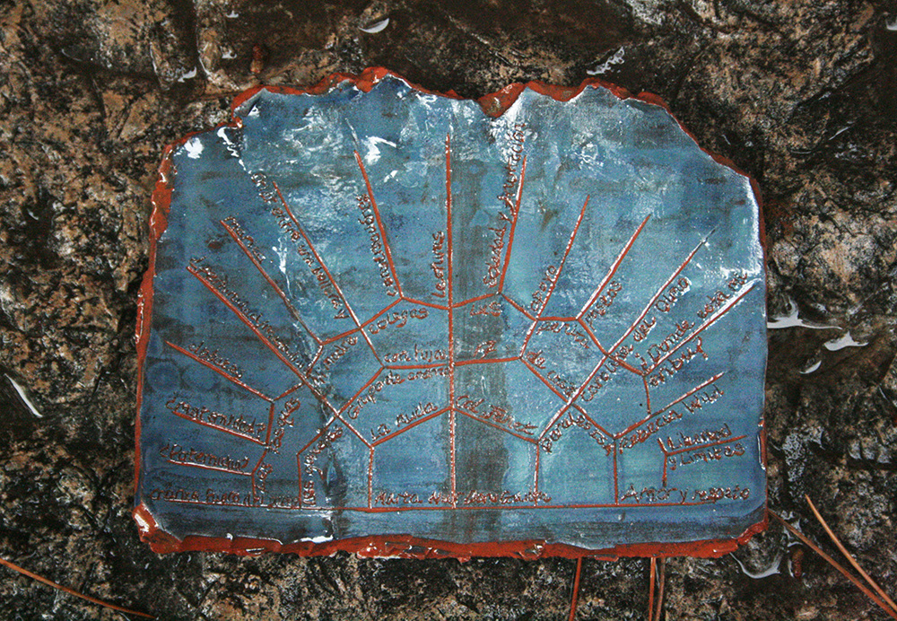
Opposite the audio work the Networks of Care=Critique ceramic piece was displayed. The (ongoing) ceramics project began with this archeobotanic idea of 'patrimony of gestures': an inscription of bodily reproductive practices on the surface of ceramics. I sat with a friend to discuss the forms of care –intellectual, emotional or physical– and critique –pedagogy, party or protest– that have been important over our lifespans. We then arranged the information on a genealogical-style diagram divided into decades or years and I made a ceramic plate of the diagram, which belonged to the person. I inscribed the clay using a needle and seeds from the Red de Semillas, a network of community seed banks active in Spain. The work reinscribes the live link between trans*feminist art, queer parenting and agroecological 'reproductive' practices, as myriad forms of resistance to state and neoliberal 'reproductive control'.
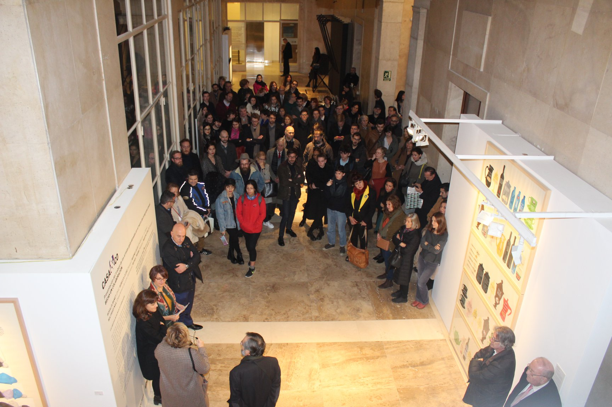
The rest of the readings and actions took place 2018-2019 and were documented by a series of poster-publications, each one using a different printing technique (typography, digital, offset and screen printing), produced in collaboration with collectives L'Automatica and Madam_tornado in Barcelona. The six posters were read in a performance-reading (with guests Tamara Al-Mashouk and Alba Juventy) at Hangar Center for Art and Technology, Barcelona, in December, 2019.